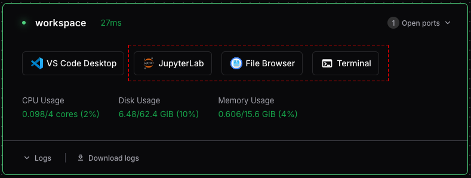

Getting Started with Coder Workspaces
Welcome to Coder! This guide will help you create your first workspace and connect to it using various tools.
Creating a Workspace
- Visit https://coder.dreamlab.ucsb.edu.
- Click “UCSB Login” and log in using UCSB SSO (via Google).
- Click the button to create a Dreamlab Workspace.
- On the “Create Workspace” page:
- Give the workspace a name.
- Check “I understand the usage policies”.
- Select additional software to enable.
- Click “Create Workspace”.
- It may take a few minutes for the workspace to boot.
Connecting to Your Workspace
Once your workspace is created, you should be directed to the workspace dashboard. There are two main ways to interact with your new workspace: directly through the browser or by using software locally installed on your machine.

Browser-based tools include:
- JupyterLab, or RStudio: These are optional IDEs for data analysis using R or Python.
- File Browser: for navigating your workspace’s file system and transferring files.
- Terminal: a browser-based terminal that provides instant access to your workspace’s shell environment.
To use these, simply click the corresponding icon on your workspace’s dashboard page.
Connecting with Locally Installed Software
For a more integrated development experience, you can connect your local tools to your Coder workspace. This typically requires installing the Coder CLI and the appropriate extensions for your IDE.
Connecting via VS Code
You can develop in your Coder workspace remotely using the Visual Studio Code desktop client.
- Ensure you have the Visual Studio Code desktop application installed.
- Install the Coder extension from the VS Code Marketplace.
- Once the extension is installed, open the Command Palette (
Ctrl+Shift+PorCmd+Shift+Pon macOS) and typeCoder: Login. - Enter your Coder deployment URL:
https://coder.dreamlab.ucsb.edu. - After logging in, you can browse your workspaces in the Coder view on the sidebar, or use the Command Palette (
Coder: Open Workspace) to connect to your workspace and start coding.
Connecting via Coder CLI
The Coder CLI can be used to authenticate and connect to your workspaces from the command line.
Installing the Coder CLI:
On Linux/macOS, the fastest way to install the CLI is using the install script:
curl -L https://coder.com/install.sh | shFor Windows, download and run the installer program (coder_2.30.6_windows_amd64_installer.exe) from Coder’s GitHub Releases page. You may want to refer to the Coder CLI documentation.
Authenticate the CLI:
Once installed, log in to your Coder deployment using your terminal:
coder login https://coder.dreamlab.ucsb.eduFollow the prompts to complete authentication via your web browser.
Connecting via SSH:
You can connect directly to your workspace using the Coder CLI:
coder ssh <workspace-name>